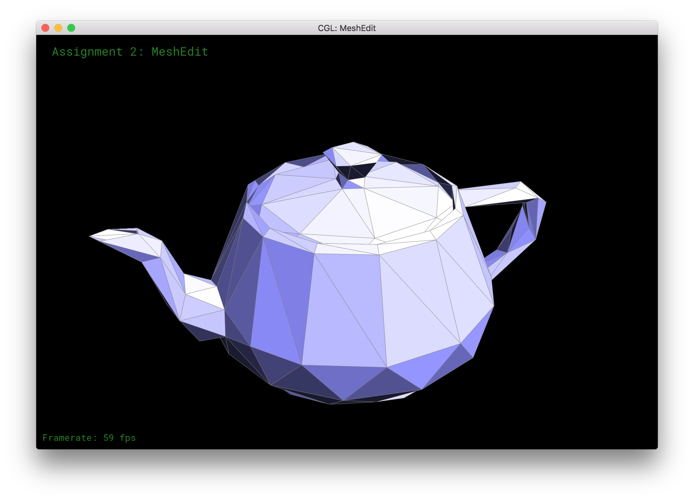
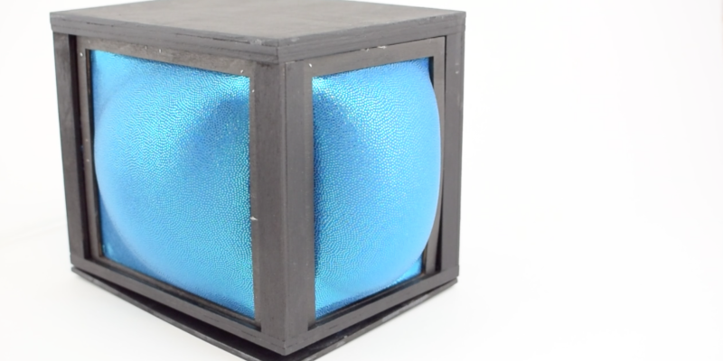
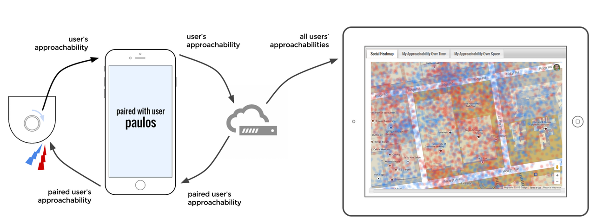
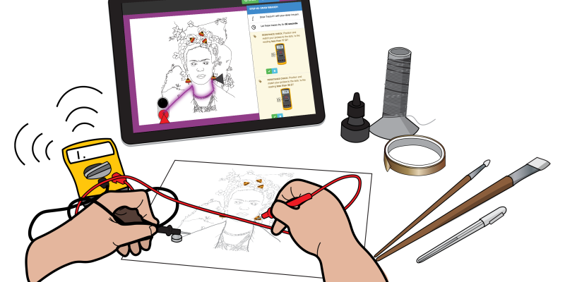

SymbIoT
Designing spatial interactions for the Internet of Things.
Meshedit++
Interactive editor for a point cloud to simplified mesh pipeline.
LiveObject
Published: ACM DIS '16 Companion
Leveraging Theatricality for an Expressive Internet of Things.
Feeld
Your social sixth sense.
Ellustrate
To Appear: ACM UIST '16 Proceedings
Designing, Sketching, and Fabricating Circuits through Digital Exploration.